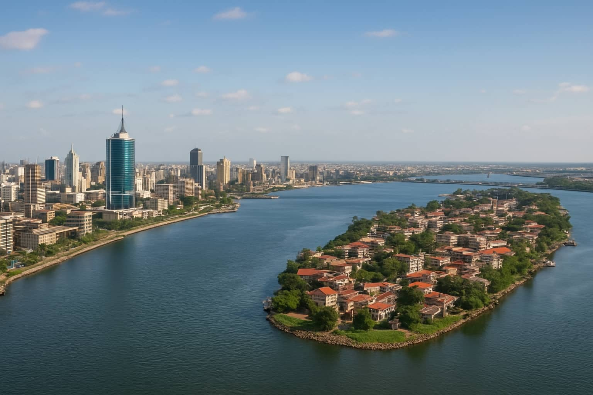

Azuwuigne Kizito Elochukwu
About Me
Hello! My name is Azuwuigne Kizito Elochukwu, and I am from Nigeria. I am currently pursuing a degree in Computer Science with a focus on web development. I have a passion for creating dynamic and user-friendly web applications.
Lagos, Nigeria
Lagos is the largest city in Nigeria and one of the fastest-growing cities in the world. It is a bustling metropolis known for its vibrant culture, diverse population, and economic significance. Lagos is a major financial center in Africa and is home to numerous industries, including technology, entertainment, and manufacturing. The city boasts beautiful beaches, lively markets, and a rich history that reflects Nigeria's cultural heritage.